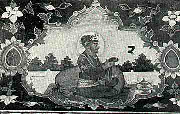

Guru Angad was the second Sikh Guru and the religious leader Sikh gurus. He was born in a Hindu family, with the birth name as Lehna, in the village of Harike (now Sarae Naga, near Muktsar) in northwest Indian subcontinent.Bhai Lehna grew up in a Khatri family and his father was a scale trader.He met Guru Nanak, the founder of Sikhism, and became a Sikh. He served and worked with Guru Nanak for many years. Guru Nanak gave Lehna the name Angad ("my own limb"), and chose Angad as the second Sikh Guru instead of his own sons. After the death of Guru Nanak in 1539, Guru Angad led the Sikh tradition. He is remembered in Sikhism for adopting and formalizing the Gurmukhi alphabet based on the then prevalent local Devanagari script. He began the process of collecting the hymns of Guru Nanak, contributed 62 or 63 hymns of his own.[4] He has chosen the third Sikh Guru, Amar Das as his successor.
